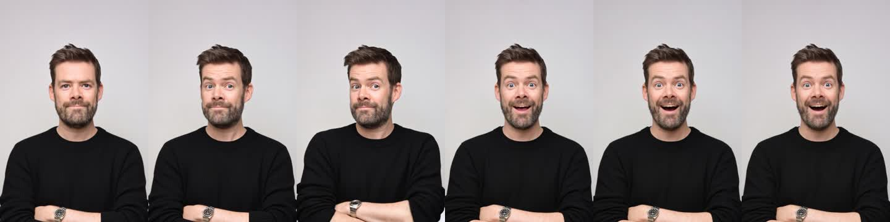
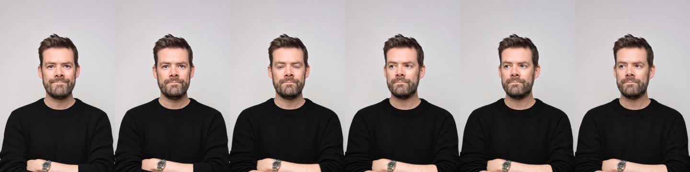
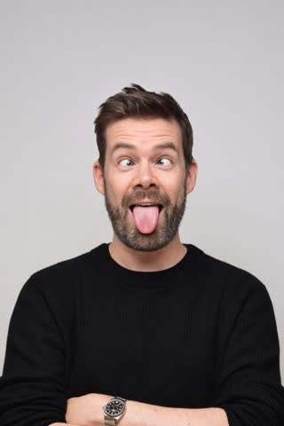
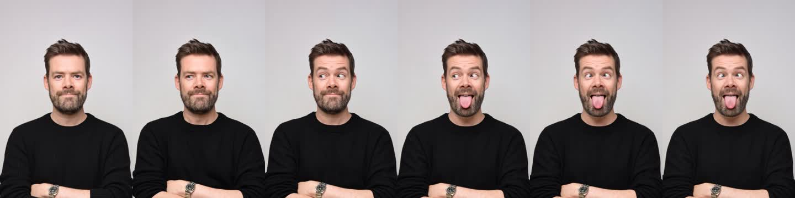

<title>Head Tracker Pilot</title>
<link rel="preconnect" href="https://fonts.googleapis.com"><link rel="preconnect" href="https://fonts.gstatic.com" crossorigin>
<link rel="stylesheet" href="https://fonts.googleapis.com/css2?family=IBM+Plex+Sans:wght@400;600&family=IBM+Plex+Mono:wght@400;500&display=swap">
<style>
:root{--bg:#ededeb;--panel:#f7f7f5;--ink:#161616;--mute:#62625e;--line:#d4d4cf;--ok:#1f7a4d;--warn:#a15c00;
 --sans:"IBM Plex Sans",system-ui,sans-serif;--mono:"IBM Plex Mono",ui-monospace,monospace}
@media (prefers-color-scheme:dark){:root:not([data-theme="light"]){--bg:#141413;--panel:#1d1d1b;--ink:#ececea;--mute:#9a9a95;--line:#34342f;--ok:#5cc491;--warn:#e0a24a;color-scheme:dark}}
:root[data-theme="dark"]{--bg:#141413;--panel:#1d1d1b;--ink:#ececea;--mute:#9a9a95;--line:#34342f;--ok:#5cc491;--warn:#e0a24a;color-scheme:dark}
body{background:var(--bg);color:var(--ink);font:15px/1.55 var(--sans)}
main{max-width:980px;margin:0 auto;padding:32px 16px 64px;display:grid;gap:36px}
h1{font-size:26px;margin:0;text-wrap:balance} h2{font-size:18px;margin:0;font-family:var(--mono);font-weight:500}
.lede{color:var(--mute);max-width:65ch;margin:6px 0 0}
.facts{display:flex;flex-wrap:wrap;gap:8px 24px;font:13px var(--mono);color:var(--mute);margin-top:14px}
.facts b{color:var(--ink);font-weight:500}
section.clip{display:grid;gap:14px;border-top:1px solid var(--line);padding-top:24px}
.head{display:flex;flex-wrap:wrap;justify-content:space-between;gap:8px;align-items:baseline}
.pill{font:12px var(--mono);padding:2px 8px;border-radius:99px;border:1px solid currentColor}
.ok{color:var(--ok)} .warn{color:var(--warn)}
.row{display:grid;grid-template-columns:repeat(4,minmax(0,1fr));gap:12px;align-items:start}
figure{margin:0;display:grid;gap:6px} figcaption{font:12px var(--mono);color:var(--mute);text-transform:uppercase;letter-spacing:.04em}
figure img,figure video{width:100%;display:block;background:#e6e6e6;border-radius:4px}
.circle{width:156px;height:156px;border-radius:50%;overflow:hidden;box-shadow:0 0 0 1px var(--line)}
.circle video{width:156px;height:156px;border-radius:0}
.strip{overflow-x:auto} .strip img{max-width:none;width:720px;border-radius:4px}
.note{max-width:65ch;margin:0}
table{border-collapse:collapse;font:13px var(--mono);width:100%} td,th{padding:6px 8px;border-bottom:1px solid var(--line);text-align:left} td.n{text-align:right;font-variant-numeric:tabular-nums}
.tw{overflow-x:auto}
@media (max-width:640px){.row{grid-template-columns:repeat(2,minmax(0,1fr))}}
</style>
<main>
<header>
  <h1>Head tracker pilot: 3 clips, black theme</h1>
  <p class="lede">Kling v3 Pro given the start and end stills. Each clip plays on a loop next to its source stills, plus a 156px circle crop showing how it looks in the hero.</p>
  <div class="facts"><span>model <b>fal-ai/kling-video/v3/pro/image-to-video</b></span><span>duration <b>3s, 24fps</b></span><span>audio <b>off</b></span><span>cost <b>$1.26</b></span></div>
</header>

<section class="clip">
  <div class="head"><h2>center → nav-ai</h2><span class="pill warn">end frame SSIM 0.980 · body sways mid-clip</span></div>
  <div class="row">
    <figure><figcaption>Start still</figcaption></figure>
    <figure><figcaption>Clip</figcaption><video src="black-center--nav-ai.mp4" muted autoplay loop playsinline></video></figure>
    <figure><figcaption>End still</figcaption></figure>
    <figure><figcaption>Hero crop</figcaption><div class="circle"><video src="hero-nav-ai.mp4" muted autoplay loop playsinline></video></div></figure>
  </div>
  <div class="strip"></div>
  <p class="note">The end frame lands well. Around 1.5s his shoulders twist and his arms shift, which neither still has. In the circle crop this shows as a small lean.</p>
</section>

<section class="clip">
  <div class="head"><h2>center → left</h2><span class="pill ok">end frame SSIM 0.984 · clean</span></div>
  <div class="row">
    <figure><figcaption>Start still</figcaption></figure>
    <figure><figcaption>Clip</figcaption><video src="black-center--left.mp4" muted autoplay loop playsinline></video></figure>
    <figure><figcaption>End still</figcaption></figure>
    <figure><figcaption>Hero crop</figcaption><div class="circle"><video src="hero-left.mp4" muted autoplay loop playsinline></video></div></figure>
  </div>
  <div class="strip"></div>
  <p class="note">Eyes and head move together, with a natural half-blink mid-turn. The body stays put.</p>
</section>

<section class="clip">
  <div class="head"><h2>center → funny</h2><span class="pill ok">end frame SSIM 0.976 · clean</span></div>
  <div class="row">
    <figure><figcaption>Start still</figcaption></figure>
    <figure><figcaption>Clip</figcaption><video src="black-center--funny.mp4" muted autoplay loop playsinline></video></figure>
    <figure><figcaption>End still</figcaption></figure>
    <figure><figcaption>Hero crop</figcaption><div class="circle"><video src="hero-funny.mp4" muted autoplay loop playsinline></video></div></figure>
  </div>
  <div class="strip"></div>
  <p class="note">The eyes cross first, then the tongue comes out. It reads as a real expression, not a morph. Likeness holds the whole way.</p>
</section>

<section class="clip">
  <div class="head"><h2>Numbers</h2></div>
  <div class="tw"><table>
    <tr><th>Clip</th><th>First frame vs center</th><th>Last frame vs target</th><th>Raw size</th><th>312px hero crop</th></tr>
    <tr><td>center → nav-ai</td><td class="n">0.990</td><td class="n">0.980</td><td class="n">7.0 MB</td><td class="n">36 KB</td></tr>
    <tr><td>center → left</td><td class="n">0.990</td><td class="n">0.984</td><td class="n">6.8 MB</td><td class="n">24 KB</td></tr>
    <tr><td>center → funny</td><td class="n">0.989</td><td class="n">0.976</td><td class="n">2.8 MB</td><td class="n">28 KB</td></tr>
  </table></div>
  <p class="note">SSIM of 1.0 means identical. Above about 0.97 at this crop, a 120ms crossfade to the still hides the difference. About 30KB per clip means a full sprite of ~47 segments should land around 1.4MB, under the 2MB budget.</p>
</section>
</main>
